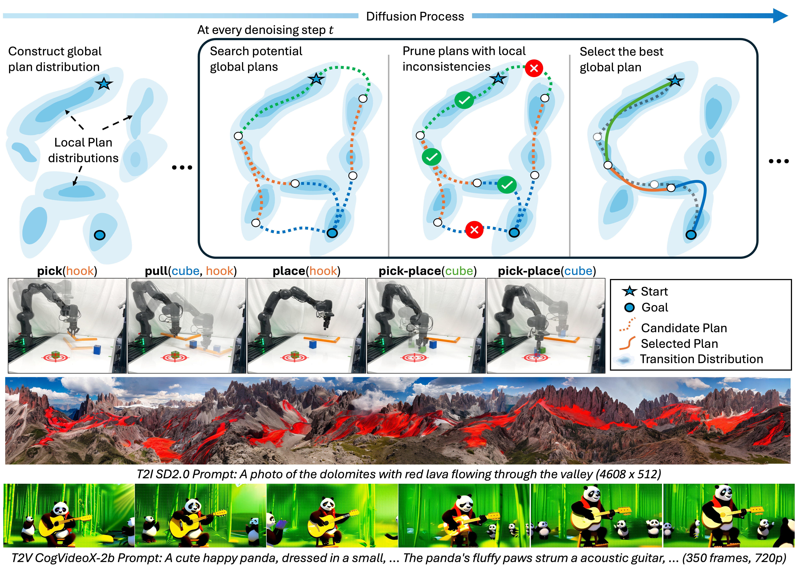
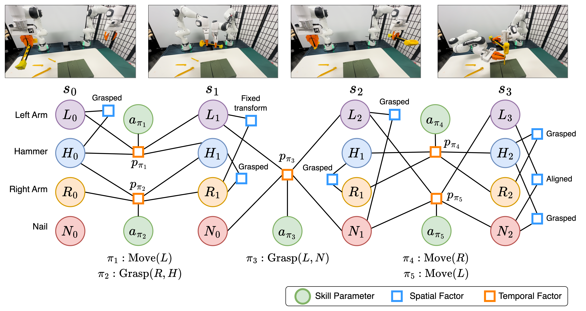
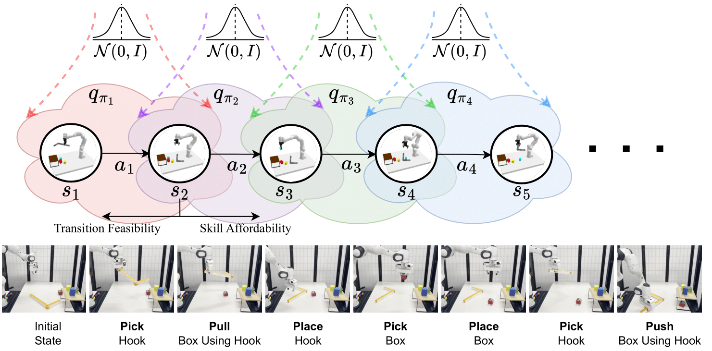
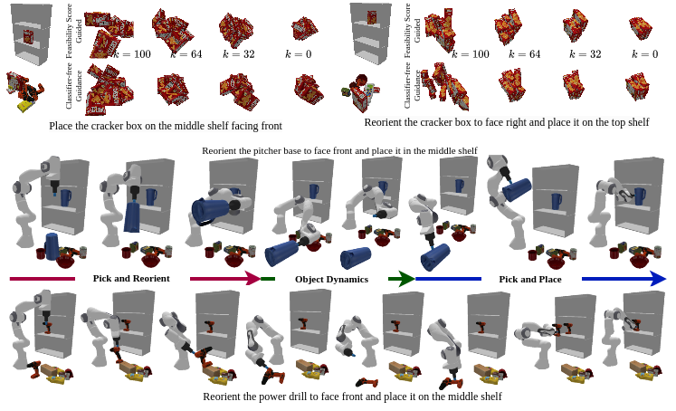
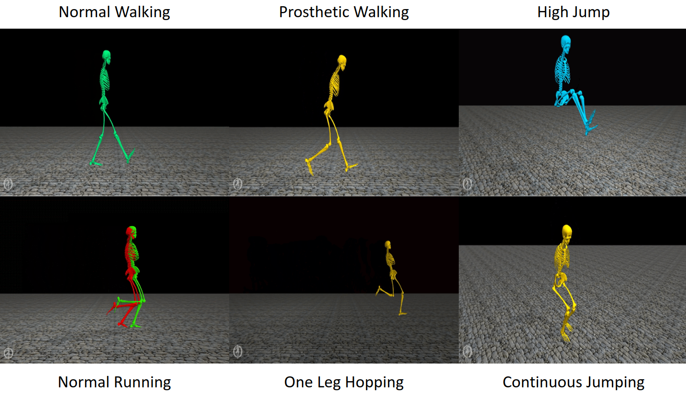
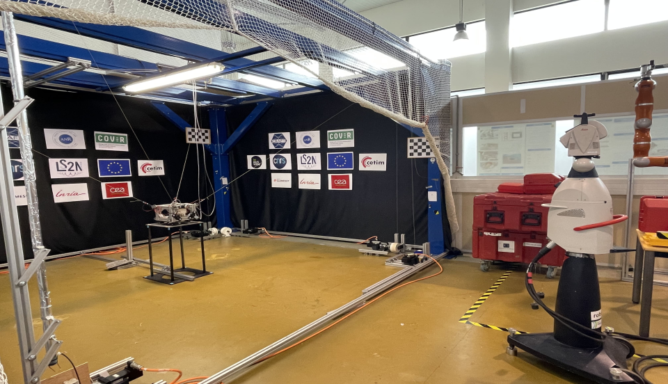

Hi! I am Utkarsh Mishra. I started my 4th year of PhD in Robotics at Georgia Tech with Dr. Yongxin Chen and Dr. Danfei Xu. My research lies at the intersection of generative methods, physical reasoning, and long-horizon planning for robotics. I focus on compositional diffusion-based approaches that generate long-horizon plans directly at inference from short-horizon data [GSC, GFC]. Recently, I've integrated search with compositional diffusion to scale performance with compute at inference [CDGS]. My work has applications in robotic planning, panorama generation, and video diffusion models. These days, I'm particularly interested in exploring controllable video generation informed by physical reasoning and its applications in making capable planners and policies for long-horizon planning.
I am currently interning at the Frontier AI & Robotics lab at Amazon. In the past, I have completed internships with Large Behavior Model (LBM) team at TRI and Sony R&D US Labs. Before joining GaTech, I have worked with Prof. Matthew E. Taylor at the Inverse Reinforcement Learning lab, University of Alberta and Prof. Shishir Kolathaya at the Stochastic Robotics lab, Indian Institute of Science. Previously, I have collaborated with Prof. Auke Ijspeert and Dr. Dimitar Stanev at the Biorobotics Laboratory, EPFL. I have also worked on Cable Driven Robots with Dr. Stéphane Caro at CNRS-LS2N France.
Updates:
- CDGS is selected for an Oral presentation (top 1.18%) at ICLR 2026. See you in Rio!
- Excited to spend my 2026 Spring at Amazon FAR Lab as an Applied Science Intern.
- Compositional Diffusion with Guided Search is out on Arxiv: 2601.00126
- I am attending NeurIPS 2025 and assisting Yunhao present CompDiffuser(SPOTLIGHT)
- Generative Factor Chaining is accepted as CoRL24 poster. More details can be found here.
- Generative Factor Chaining will be presented as a SPOTLIGHT talk in Back to the Future ICRA 2024 workshop!
| PhD, Robotics Georgia Tech 2022 - Present |
Research Intern Amazon FAR Spring 2026 |
Research Intern TRI LBM Summer 2024 |
Research Intern Sony R&D Summer 2023 |
BTech, ME IIT Roorkee 2017 - 2021 |
Selected Articles

Website Paper Code Video

Oral: ICRA 2024 Workshop — Back to the Future: Robot Learning Going Probabilistic
Oral: ICRA 2024 Workshop: A Future Roadmap for Sensorimotor Skill Learning for Robot Manipulation
Website Paper Code Video

Oral: CoRL 2023 Learning Effective Abstractions for Planning (LEAP) Workshop
Website Paper Code Video

Poster: RSS 2023 Learning for Task and Motion Planning Workshop
Website Paper Code Video

Poster: Reinforcement Learning and Decision Making 2022.
Poster: Ecological RL workshop at NeurIPS 2021.
Website Paper Code Video

Poster: 2nd Offline RL workshop at NeurIPS 2021.
Poster: Deep RL Workshop at NeurIPS 2021.
Website Paper Code Video



Special Issue: IDETC/CIE 2021 M&R Conference.
Website Paper Code Video